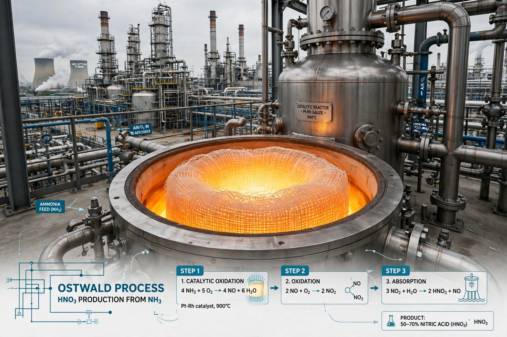

The Ostwald process is the industrial method for producing nitric acid by catalytic oxidation of ammonia, developed by Wilhelm Ostwald and the basis, together with the Haber process, of modern fertiliser and explosives manufacture.
(1) Ammonia is oxidised over platinum–rhodium gauze at ~900 °C: 4NH₃ + 5O₂ → 4NO + 6H₂O. (2) Nitric oxide oxidises to nitrogen dioxide: 2NO + O₂ → 2NO₂. (3) NO₂ is absorbed in water: 3NO₂ + H₂O → 2HNO₃ + NO, with NO recycled.
Paired with Haber ammonia synthesis, it freed Germany from Chilean nitrate imports in World War I and underpins global nitrogen fertiliser supply.